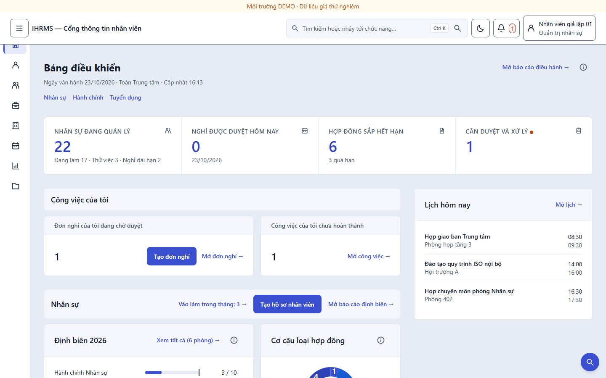
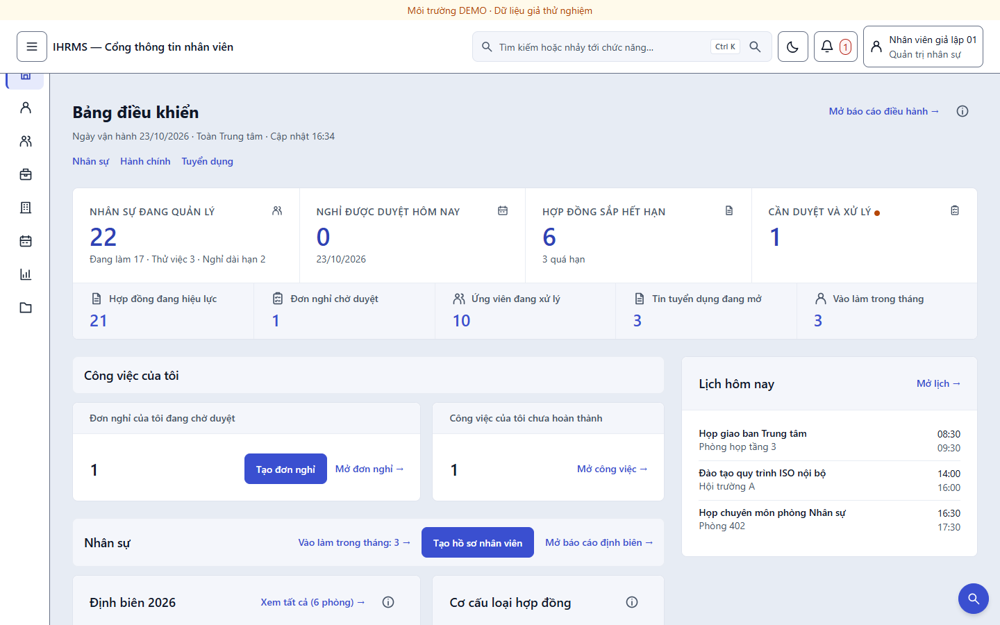
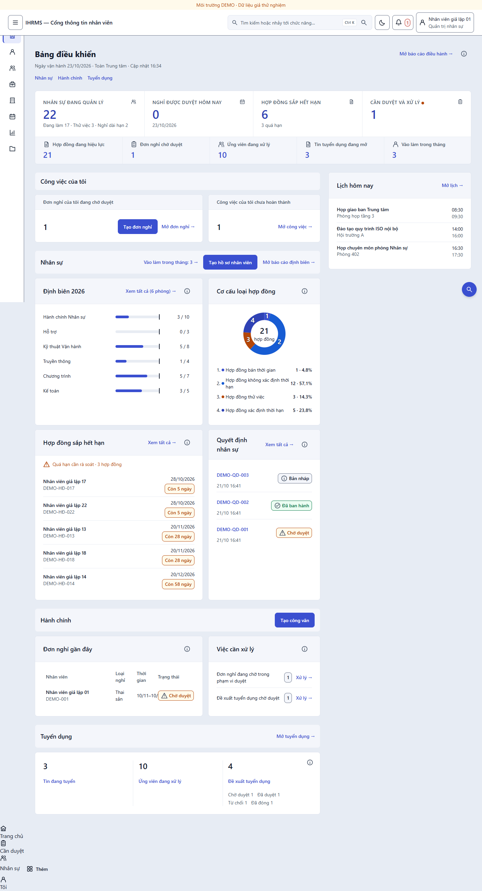
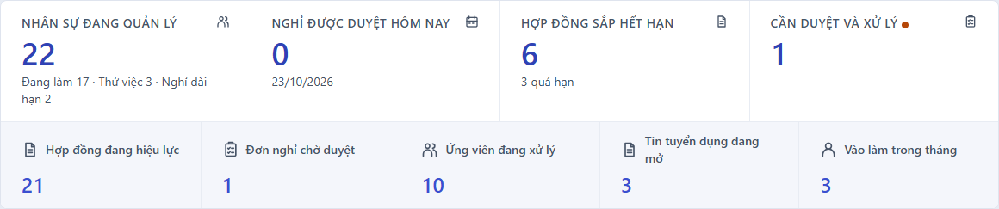
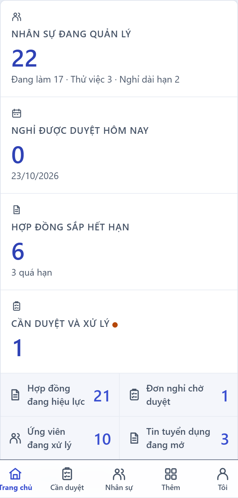
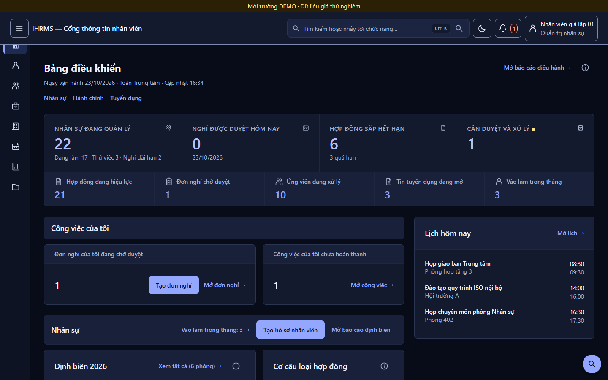
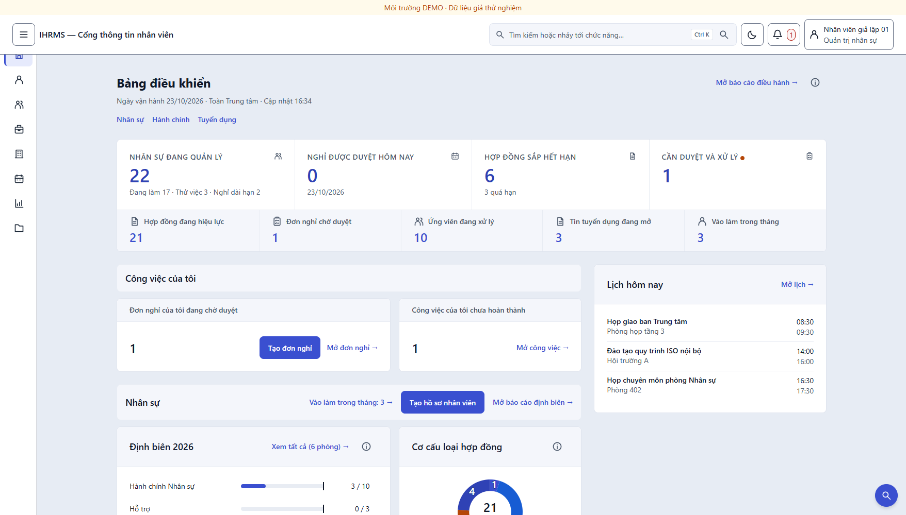
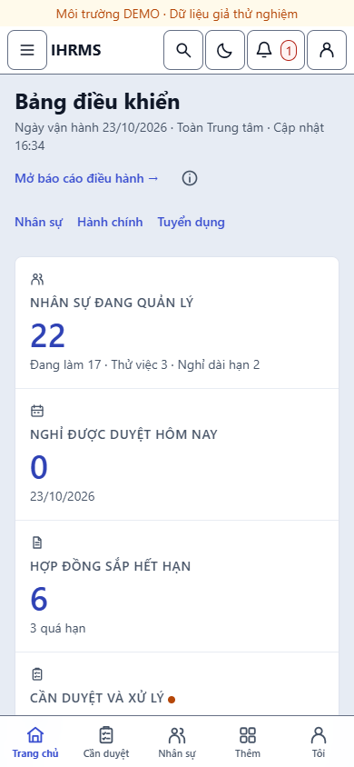

Hai yêu cầu trong ảnh bạn gửi: khoảng cách giữa các dòng quá rộng, và dải 5 ô KPI ở đáy trang cần chuyển lên ngay dưới 4 ô chính. Cả hai đã vào mã. Điều đáng nói: sau khi chuyển, trang ngắn hơn 137px dù thêm một hàng vào đầu trang — vì nhịp dọc được siết cùng lúc.
Bản trước dùng nhịp 32px cho mọi cấp: giữa các khối, trong luồng nội dung, giữa hai cột 8/4. Cộng với đệm 12px mỗi bên của dòng danh sách, trang đọc như bị "thở" quá nhiều. Đợt này hạ nhịp khối xuống 24px và bớt đệm dòng:
| Điểm đo (tài khoản HR, 1440px) | Trước | Sau | Ghi chú |
|---|---|---|---|
Nhịp giữa các khối (.home-dashboard) | 32px | 24px | token --ui-space-6 |
| Nhịp luồng nội dung chính | 32px | 24px | |
| Nhịp hai cột 8/4 | 32px | 24px | |
| Dòng danh sách hợp đồng | 79px | 71px | đệm dọc 12 → 8 |
| Dòng quyết định nhân sự | 89px | 81px | |
| Dòng bảng nghỉ phép | 69px | 61px | ô bảng 12/8 → 8 |
| Nhịp trong một nhóm (giữa tiêu đề và thẻ) | 12px | 12px | giữ nguyên — đây là nhịp đọc, không phải nhịp khối |
Vì sao không hạ cả nhịp trong nhóm xuống 8px? 12px là khoảng giữa tiêu đề nhóm và các thẻ bên dưới — hạ nữa thì tiêu đề dính vào thẻ, mất ranh giới nhóm. Chỗ gây cảm giác "dãn" là khoảng giữa các khối lớn, không phải chỗ này.
Trước đây 4 chỉ số chính là một thẻ, còn 5 chỉ số tổng hợp là một thẻ khác nằm tận đáy trang (y = 2.473). Nay cả hai nằm trong một thẻ: hàng 1 là 4 chỉ số chính, hàng 2 là 5 chỉ số tổng hợp, ngăn nhau bằng một đường kẻ ngang. Hàng 2 dùng nền tint nhẹ để đọc như phần tóm tắt của hàng 1.


| Điểm đo | Trước | Sau |
|---|---|---|
| Vị trí dải 5 chỉ số | y 2.473 (đáy trang) | y 407 (hàng 2) |
| Chiều cao dải 5 chỉ số | 90px | 81px |
| Chiều cao thẻ KPI | 138px | 219px (2 hàng + đường kẻ) |
| Chiều cao trang | 2.791px | 2.654px |
| "Công việc của tôi" bắt đầu | y 448 | y 513 |

.home-kpi-block khi có ít nhất một chỉ số.1fr auto: nhãn bám trên, số bám đáy, nên 5 số luôn cùng một đường chân.




Nói thẳng: đây là thay đổi hợp đồng kiểm, không phải nới cổng để test xanh. Cả hai đều là hệ quả trực tiếp của yêu cầu trong ảnh.
| Điều khoản | Trước | Sau | Vì sao |
|---|---|---|---|
groupGap trong run_dashboard_layout_uat.py | 32px | 24px | Chính là yêu cầu "đừng dãn quá lớn"; cổng vẫn kiểm bằng nhau tuyệt đối, chỉ đổi giá trị hợp đồng. |
Màn hình đầu phải chứa trọn nhóm group-projects | đáy ≤ 900 | tiêu đề nhóm đầu < 900 | Thêm hàng 2 cao 81px vào đầu trang thì một nhóm nghiệp vụ không thể vừa 900px nữa. Giữ nguyên đòi hỏi này sẽ buộc phải bỏ yêu cầu của bạn. Tiêu đề nhóm vẫn phải hiện trong màn hình đầu, và "Công việc của tôi" vẫn phải trọn trong màn hình đầu. |
Đo được sau khi đổi: tài khoản Trưởng phòng có group-projects kết thúc ở y 953 (trước 895) — vượt 900 đúng 53px, trong khi tiêu đề nhóm nằm ở y 741. Tài khoản HR: "Công việc của tôi" kết thúc ở y 722, tiêu đề nhóm Nhân sự ở y 746.
| Cổng | Kết quả | Chi tiết |
|---|---|---|
| Test đơn vị (sqlite) | OK | 826 test, 7 bỏ qua |
run_dashboard_layout_uat.py | 0 lỗi | 4.568 kiểm tra · 48 ảnh · 9 tài khoản × 6 bề rộng × 2 nền |
run_layout_alignment_audit.py | 0 vi phạm | 150 route · 6.881 trường hợp · 0 lỗi |
check_ui_contrast.py | 0 lỗi | 220 cặp token; nền tint mới đo tay: 7,11:1 (sáng) và 7,39:1 (tối) |
run_browser_uat.py --layout-only | 0 lỗi | 128 kiểm tra · 32 ảnh · 0 lỗi |
| Tệp | Thay đổi |
|---|---|
src/apps/portal/templates/portal/dashboard.html | Dải 5 chỉ số chuyển vào .home-kpi-block ngay dưới 4 chỉ số chính; bỏ include ở đáy; chỉ dựng thẻ khi có chỉ số. |
src/static/css/home_dashboard.css | Nhịp khối 32 → 24; đệm dòng danh sách và ô bảng giảm 4px; thẻ KPI gộp hai hàng; hàng 2 nền tint + đường kẻ ngang; hàng 2 hai cột trên điện thoại. |
ops/run_dashboard_layout_uat.py | groupGap 32 → 24; điều kiện màn hình đầu đổi sang "tiêu đề nhóm đầu tiên", áp cho mọi tài khoản. |
44744ff, b8e77b0, a5277df) cùng commit đợt này chưa push — cần đẩy lên và xem CI.